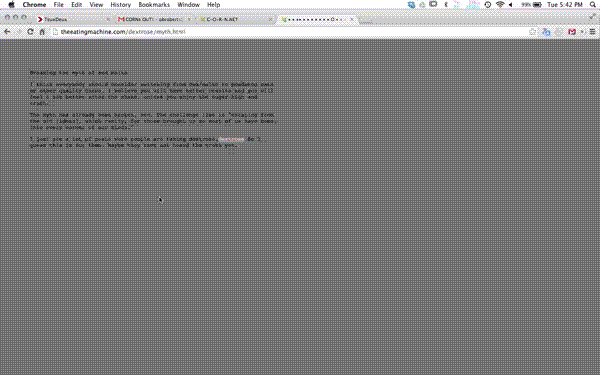

A dextrose by any other name is an Internet based work for the CORN publication by Sarah Rothberg and Ben Kauffman. It combines a bunch of various sources on dextrose I found on the web. I combined various text sources with different animation and text modifying scripts, most of which are very simple and rudimentary. See it live here.
My aim was to create a feeling that I often experience when surfing the Internet, which is marked by repetition (or seeing the same results over and over when searching for something) and confusion (reading discordant views on any given subject presented as “information”).
The inspiration behind the piece was simple: Sarah and Ben had asked for some reaction to corn as a concept, and my thoughts traveled from corn starch to factory farms to the general fear/paranoia that comes from distrusting the basic production and distribution methods for food in the US, which I think is something that many people experience, but very few have an informed understanding of, and this was all distilled in this thing that happens to me very often, which is reading the labels of granola bars to make sure that things like “dextrose” are not in them, despite not really understanding what dextrose is. I found that trying to understand dextrose was very difficult because of the many different kinds of information that appeared, and the simple fact that dextrose is just another name for glucose or sugar, and so there is no reliable information that talks specifically about dextrose, the Wikipedia entry for dextrose redirects to glucose. I also found a lot of the text and videos that I found to be really weird, interesting and funny, so I pulled from a lot of different sources and mashed them together in a way that I think captures my experience of trying to understand dextrose.
On a more abstract level this piece is really about the way that we use information on the Internet and the way that the Internet can make the idea of information, in the sense that information is defined as a collection of facts, sort of precarious.